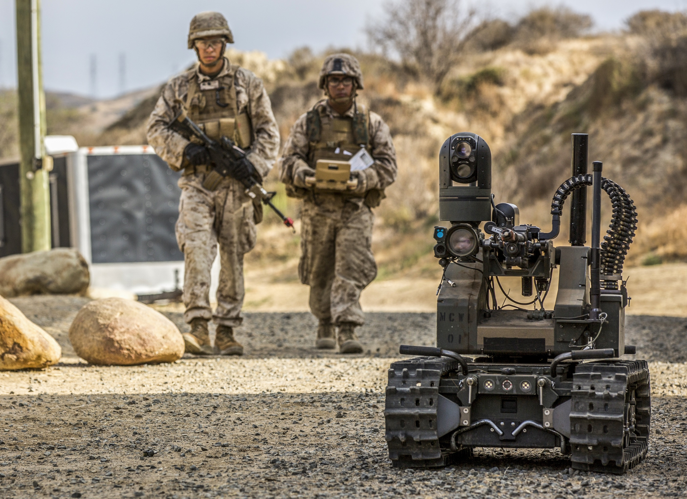
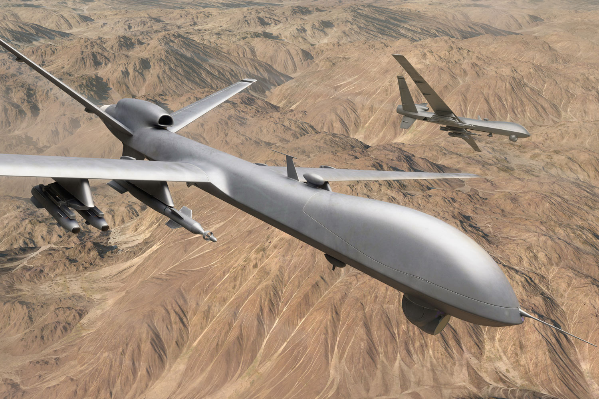
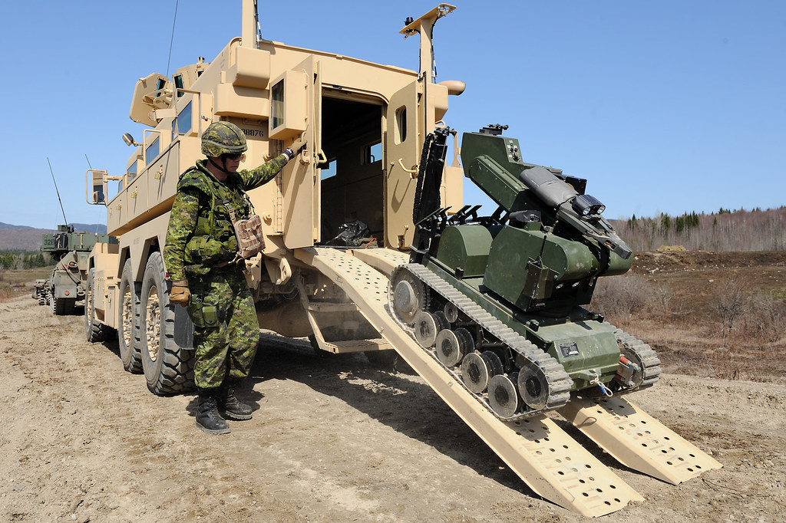

Les robots militaires, armes contrôlées à distance, sont principalement utilisés par l'armée afin de limiter les pertes humaines et d'éviter au maximum de mettre les soldats dans des situations dangereuses. Aujourd’hui, on retrouve trois types de robot militaire sur le terrain : les démineurs, qui permettent d’éviter la mort accidentelle d’un soldat lors d’une explosion, les drones, qui sortent de la limite du corps humain et fournissent des prises de vue aériennes pour espionner l’ennemi, et enfin, les robots de combat qui sont équipé d’armes utilisé sur le champ de bataille dans le but d’aider les soldats.


